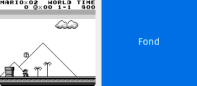
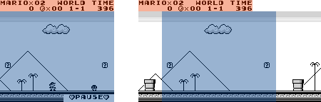
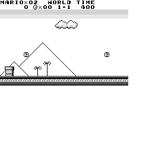

Images
Gameboj – Étape 8
1 Introduction
Le but de cette étape est d'écrire les classes permettant de représenter les images stockées en mémoire et affichées à l'écran du Game Boy.
1.1 Image affichée
Comme cela a été brièvement mentionné dans l'énoncé de l'étape précédente, l'image affichée à l'écran du Game Boy est obtenue par compositions de plusieurs images séparées, qui sont combinées entre elles de différentes manières. Ces images sont :
- l'image de fond,
- la « fenêtre », qui est une sorte d'image de fond alternative,
- les sprites, qui sont de petites images utilisées pour représenter les éléments mobiles de la scène.
Avant que ces images ne soient combinées entre elles, leurs couleurs peuvent être transformées au moyen de ce que l'on nomme des palettes. De plus, les images des sprites peuvent être inversées horizontalement et/ou verticalement.
Ces différentes images et la manière dont elles peuvent être transformées et composées sont décrits plus bas. Avant cela, il importe toutefois de décrire la manière dont la position des pixels dans une image est décrite.
1.2 Numérotation des pixels
Sur le Game Boy, les pixels des images sont numérotés au moyen d'une paire d'index, le premier correspondant à la position horizontale du pixel, le second à sa position verticale. Le pixel du coin haut-gauche de l'image a l'index (0,0), son voisin de droite l'index (1,0), et ainsi de suite. Les index des pixels de l'image affichée à l'écran, qui a pour mémoire une taille de 160 par 144 pixels, sont donc les suivants :
1.3 Image de fond et fenêtre
L'image de fond montre généralement le décor dans lequel l'action du jeu se déroule. Il s'agit d'une image assez statique, dont la plupart des éléments sont fixes.
1.3.1 Extraction
Comme expliqué dans l'énoncé de l'étape précédente, l'image de fond affichée à l'écran est une sous-partie de 160×144 pixels d'une plus grande image carrée de 256 pixels de côté stockée en mémoire. Ce qui n'avait pas encore été précisé est que cette extraction est faite (conceptuellement) sur l'extension infinie par enroulement de l'image stockée en mémoire. Il faut noter que cet enroulement est fait dans les deux dimensions.
Par exemple, si l'image à afficher est extraite à partir du pixel d'index (250, 0), alors les 6 premiers pixels de chaque ligne de l'image extraite seront les 6 derniers de chaque ligne de l'image en mémoire, tandis que les 154 derniers seront les 154 premiers de chaque ligne de l'image en mémoire.
1.3.2 Fenêtre
Le Game Boy a la particularité d'avoir deux images de fond, la seconde étant nommée la fenêtre (window). Il s'agit d'une image de fond alternative, qui peut se substituer à cette dernière à partir d'une certaine position.
Cela signifie que lorsque la fenêtre est visible à l'écran, à partir d'une position (x,y) donnée, alors tous les pixels affichés en dessous et à droite de cette position sont ceux de la fenêtre et pas de l'image de fond normale. En d'autres termes, la fenêtre peut occuper une portion située en bas et à droite de l'écran uniquement.
La fenêtre est par exemple utilisée dans Super Mario Land pour afficher un message lorsque le jeu est mis en pause, comme le montre la figure ci-dessous. Le texte « pause » est écrit sur la partie haut-gauche de la fenêtre, qui apparaît dans le coin bas-droite de l'écran lorsque le jeu est mis en pause.

Figure 1 : Utilisation de la fenêtre lors de la mise en pause
1.4 Sprites
Les sprites sont de petites images utilisées pour représenter les éléments mobiles de la scène, p.ex. les différents personnages présents à l'écran. Sur le Game Boy, les sprites font toujours 8 pixels de large, et 8 ou 16 pixels de haut. Il est possible d'en afficher jusqu'à 40 simultanément à l'écran.
Dans la plupart des cas, les sprites sont placés au-dessus de l'image de fond. Certains pixels des sprites peuvent être transparents, ce qui signifie que l'image de fond est visible à travers eux. Cela permet aux sprites d'avoir des formes qui semblent quelconques, même si en réalité leurs images sont toujours des rectangles de 8×8 ou 8×16 pixels.
Il est aussi possible de placer certains sprites au-dessous de l'image de fond. Dans ce cas, certains pixels de l'image de fond sont transparents et laissent apparaître les éventuels sprites se trouvant derrière eux.
1.5 Transformation des couleurs
Les couleurs des différentes images metionnées ci-dessus — image de fond, fenêtre, sprites — peuvent être transformées avant l'affichage. Cette transformation consiste à remplacer systématiquement une couleur par une autre, au moyen d'une table.
Par exemple, la table ci-dessous spécifie que les couleurs 0 et 3 doivent être inversées, tandis que les couleurs 1 et 2 ne changent pas.
| Couleur originale | 3 | 2 | 1 | 0 |
|---|---|---|---|---|
| Couleur transformée | 0 | 2 | 1 | 3 |
Une table de ce type peut être encodée de manière compacte, au moyen d'un octet seulement : les bits 0 et 1 contiennent la couleur à utiliser en lieu et place de la couleur 0, les bits 2 et 3 contiennent celle à utiliser en lieu et place de la couleur 1, et ainsi de suite. Par exemple, la table ci-dessus est encodée par les 8 bits suivants : 00 10 01 11.
Sur le Game Boy, un octet utilisé pour représenter une transformation de couleurs est nommé palette.
1.6 Calcul par ligne
La description du processus de calcul de l'image affichée à l'écran donnée ci-dessus pourrait laisser penser que les différentes images — fond, fenêtre, sprites — peuvent être calculées individuellement puis composées pour obtenir l'image finale.
En réalité, les choses sont légèrement plus compliquées. En effet, pour des raisons qui seront expliquées dans une étape ultérieure, les paramètres des différentes opérations appliquées aux images peuvent changer à chaque ligne !
Par exemple, il est possible de changer pour chaque ligne les paramètres déterminant quelle zone de l'image stockée en mémoire est extraite pour être affichée à l'écran. Cela permet d'extraire des zones de l'image stockée en mémoire dont la forme est plus complexe qu'un simple rectangle de 160×144 pixels.
Cette possibilité est par exemple utilisée pour extraire l'image de fond dans Super Mario Land lorsque le personnage de Mario se déplace, comme l'illustre la figure ci-dessous. On y voit à gauche l'image affichée à l'écran après quelques secondes de jeu, et à droite l'image de fond stockée en mémoire — dont la partie inférieure, inutilisée, a été rognée pour alléger la présentation. Comme on le constate, l'image de fond visible à l'écran n'est pas simplement une sous-partie rectangulaire de l'image stockée en mémoire, mais une combinaison de deux sous-parties rectangulaires : celle coloriée en rouge, qui montre différentes informations comme le temps restant, et celle coloriée en bleu, qui montre le décor.

Figure 2 : Extraction d'une image de fond non rectangulaire
De manière similaire, il est possible de changer les palettes utilisées pour transformer les couleurs des différentes images à chaque ligne.
Cette possibilité de changer les paramètres de transformation des images à chaque ligne ouvre la porte à un très grand nombre d'effets visuels intéressants, et est utilisée dans la quasi-totalité des jeux. Elle a toutefois une implication importante sur le calcul des images dans notre simulateur, puisque celui-ci doit impérativement se faire au niveau des lignes et pas au niveau des images.
Cela signifie que chaque ligne à afficher doit être calculée individuellement, en combinant une ligne de l'image de fond, éventuellement une ligne de la fenêtre, une ligne de chaque sprite ayant une intersection avec la ligne calculée, etc. Pour cette raison, toutes les opérations nécessaires à la combinaison et à la transformation des images individuelles pour obtenir l'image à afficher seront définies uniquement sur les lignes, et pas sur les images entières. Ces opérations sont :
- Le décalage
- qui consiste à décaler horizontalement une ligne d'un certain nombre de pixels ; utile, entre autres, pour positionner horizontalement les sprites.
- L'extraction par enroulement
- qui consiste à extraire une ligne d'une taille donnée de l'extension infinie par enroulement d'une autre ligne ; utile pour obtenir une ligne de l'image de fond.
- La jointure
- qui consiste à composer deux lignes de longueur identique pour en obtenir une nouvelle de même longueur dont les n premiers pixels sont ceux de la première, les autres ceux de la seconde ; utile pour combiner les lignes de l'image de fond et de la fenêtre.
- La superposition
- qui consiste à composer deux lignes de longueur identique pour en obtenir une nouvelle de même longueur dont les pixels sont ceux de la ligne du dessus, pour ceux qui sont opaques, et ceux de la ligne du dessous sinon.
2 Mise en œuvre Java
Toutes les classes de cette étape seront placées dans le paquetage ch.epfl.gameboj.component.lcd, dédié à l'écran à cristaux liquides.
2.1 Classe LcdImageLine
La classe LcdImageLine, du paquetage ch.epfl.gameboj.component.lcd, finale et immuable, représente une ligne d'image Game Boy.
Une ligne d'image est composée de trois vecteurs de bits de même longueur : le premier contient les bits de poids fort (msb), le second les bits de poids faible (lsb) et le dernier l'opacité (opacity). Ces trois vecteurs sont passés au constructeur de la classe, qui lève une exception s'ils n'ont pas tous la même taille.
Le bit d'index i de chacun des trois vecteurs contient les informations — le bit de poids fort pour msb, le bit de poids faible pour lsb et l'opacité pour opacity — du pixel d'index i de la ligne. Notez que nous avons l'habitude de numéroter les bits des vecteurs de droite à gauche, alors que les pixels d'une ligne sont numérotés de gauche à droite, ce qui est un peu troublant ! Pour ne pas se laisser inutilement perturber par cela, il est préférable de se souvenir simplement que le bit d'index i de chacun des vecteurs correspond au pixel d'index i, sans réfléchir à la manière dont ces bits sont ordonnés lorsqu'ils sont écrits dans l'ordre habituel.
En plus du constructeur décrit ci-dessus, la classe LcdImageLine offre des méthodes permettant de :
- obtenir la longueur, en pixels, de la ligne (
size), - obtenir le vecteur des bits de poids fort (
msb), des bits de poids faible (lsb) et de l'opacité (opacity), - décaler la ligne d'un nombre de pixels donné, en préservant sa longueur (
shift), - extraire de l'extension infinie par enroulement, à partir d'un pixel donné, une ligne de longueur donnée (
extractWrapped), - transformer les couleurs de la ligne en fonction d'une palette, donnée sous la forme d'un octet encodé comme spécifié plus haut (
mapColors), - composer la ligne avec une seconde de même longueur, placée au-dessus d'elle, en utilisant l'opacité de la ligne supérieure pour effectuer la composition (
below), - composer la ligne avec une seconde de même longueur, placée au-dessus d'elle, en utilisant un vecteur d'opacité passé en argument pour effectuer la composition, celui de la ligne supérieure étant ignoré (
below, deuxième variante), - joindre la ligne avec une autre de même longueur, à partir d'un pixel d'index donné (
join).
De plus, étant donné que la classe LcdImageLine est immuable, elle redéfinit les méthodes equals et hashCode afin que ses instances soient comparées de manière structurelle. En d'autres termes, deux lignes d'image sont considérées comme égales si et seulement si les trois vecteurs de bits les composant sont égaux.
2.1.1 Conseils de programmation
La plupart des méthodes de la classe LcdImageLine s'écrivent facilement en utilisant les méthodes de la classe BitVector appliquées aux trois vecteurs. Par exemple, les opérations de décalage et d'extraction se mettent en œuvre en appelant les méthodes correspondantes de BitVector sur chacun des trois vecteurs, et en construisant une ligne d'image avec les résultats.
- Méthodes de composition
Les méthodes de composition (
belowetjoin) sont à peine plus complexes à écrire. Dans les deux cas, il faut trouver comment calculer un pixel de la ligne résultant de la composition en combinant les pixels correspondants des lignes à combiner au moyen d'opérations logiques — conjonction, disjonction, complément. Une fois la manière de calculer un pixel déterminée, il est facile de calculer tous pixels de la ligne en utilisant les opérations bit à bit sur les vecteurs.Par exemple, pour la superposition (
below), il est clair que chaque pixel du résultat est celui de la ligne du dessus s'il est opaque, celui de la ligne du dessous sinon. Il est assez facile d'exprimer cette correspondance au moyen d'opérations logiques sur les bits correspondant, et d'écrire dès lors la méthodebelowau moyen des méthodesand,oretnotde la classeBitVector. - Transformation des couleurs
La méthode de transformation des couleurs,
mapColors, est probablement la plus difficile à écrire de cette étape. Il est donc important de bien y réfléchir et de faire les constatations suivantes.Premièrement, si la palette donnée à
mapColorsne change aucune couleur, alors elle n'a rien besoin de faire et peut simplement retourner la ligne telle quelle. Cette optimisation est importante, car ce cas est extrêmement fréquent en pratique.Deuxièmement, la transformation des couleurs peut se faire de manière beaucoup plus efficace que par itérations sur les pixels ! En effet, il est possible d'itérer sur les couleurs et de calculer le résultat de la transformation au moyen d'opérations bit à bit effectuées sur les vecteurs de bits de poids fort et faible. Là aussi, il s'agit d'une optimisation importante car le nombre de couleurs (4) est beaucoup plus petit que le nombre de pixels par ligne (160 en général).
2.2 Classe LcdImageLine.Builder
La classe Builder, publique, finale et imbriquée statiquement dans LcdImageLine, est un bâtisseur de ligne d'image.
Ce bâtisseur a la particularité de ne contenir que deux bâtisseurs, un pour les bits de poids fort, l'autre pour les bits de poids faible. Le vecteur d'opacité est en effet calculé au moment de la construction de la ligne, par la méthode build décrite ci-dessous, en utilisant la convention — toujours respectée sur le Game Boy — que les pixels de couleur 0 sont transparents, les autres opaques.
En plus de son constructeur, la classe Builder offre des méthodes permettant de :
- définir la valeur des octets de poids fort et de poids faible de la ligne, à un index donné (
setBytes), - construire la ligne avec les octets définis jusqu'à présent, dans laquelle tous les pixels de couleur 0 sont transparents, les autres opaques (
build).
2.3 Classe LcdImage
La classe LcdImage, du paquetage ch.epfl.gameboj.component.lcd, finale et immuable, représente une image Game Boy.
Son constructeur prend en argument la largeur et la hauteur de l'image, ainsi que la liste de ses lignes — de type List<LcdImageLine>.
En plus de ce constructeur, la classe LcdImage offre des méthodes permettant de :
- obtenir la largeur et la hauteur de l'image (
widthetheight), - obtenir, sous la forme d'un entier compris entre 0 et 3, la couleur d'un pixel d'index (x, y) donné (
get).
De plus, étant donné que la classe LcdImage est immuable, elle redéfinit les méthodes equals et hashCode afin que ses instances soient comparées de manière structurelle.
2.4 Classe LcdImage.Builder
La classe Builder, publique, finale et imbriquée statiquement dans LcdImage, est un bâtisseur d'image.
Son constructeur prend en argument la largeur et la hauteur de l'image à bâtir. Initialement, celle-ci est vide, c-à-d que tous ses pixels ont la couleur 0.
En plus du constructeur, la classe Builder offre des méthodes permettant de :
- changer la ligne d'index donné (
setLine), - obtenir l'image en cours de construction (
build).
2.5 Tests
Pour faciliter le test des classes de cette étape, nous mettons à votre disposition un fichier nommé sml.bin.gz qui contient — compressés avec gzip — les 16 384 octets correspondant à l'image de 256 pixels de côté stockée en mémoire au début d'une partie de Super Mario Land1.
Le programme ci-dessous lit ces octets, les utilise pour construire une image de type LcdImage, transforme cette image en une de type BufferedImage et finalement l'écrit sur disque au format PNG, dans un fichier nommé sml.png. Bien entendu, en fonction de la manière dont vous avez défini les méthodes des classes LcdImage et LcdImageLine, et de leurs bâtisseurs, vous devrez peut-être adapter ce programme avant de pouvoir l'exécuter.
public final class DebugDrawImage {
private static final int[] COLOR_MAP = new int[] {
0xFF_FF_FF, 0xD3_D3_D3, 0xA9_A9_A9, 0x00_00_00
};
public static void main(String[] args) throws IOException {
String f = "sml.bin.gz";
int w = 256, h = 256;
LcdImage.Builder ib = new LcdImage.Builder(w, h);
try (InputStream s =
new GZIPInputStream(new FileInputStream(f))) {
for (int y = 0; y < h; ++y) {
LcdImageLine.Builder lb = new LcdImageLine.Builder(w);
for (int x = 0; x < w / Byte.SIZE; ++x)
lb.setBytes(x, s.read(), s.read());
ib.setLine(y, lb.build());
}
}
LcdImage li = ib.build();
BufferedImage i =
new BufferedImage(w, h, BufferedImage.TYPE_INT_RGB);
for (int y = 0; y < h; ++y)
for (int x = 0; x < w; ++x)
i.setRGB(x, y, COLOR_MAP[li.get(x, y)]);
ImageIO.write(i, "png", new File("sml.png"));
System.out.println("done");
}
}
En exécutant ce programme puis en affichant l'image contenue dans le fichier sml.png qu'il génère, vous devriez voir ceci :

Notez bien que seule une toute petite partie du code de cette étape est utilisée par ce programme. Il vaut donc la peine de l'augmenter et/ou d'écrire des tests unitaires pour augmenter votre confiance en votre code.
3 Résumé
Pour cette étape, vous devez :
- écrire les classes
LcdImageLine,LcdImageLine.Builder,LcdImageetLcdImage.Builder(ou équivalent) en fonction des indications données plus haut, - tester votre code,
- documenter la totalité des entités publiques que vous avez définies.
Aucun rendu n'est à faire pour cette étape avant le rendu final. N'oubliez pas de faire régulièrement des copies de sauvegarde de votre travail en suivant nos indications à ce sujet.
Notes de bas de page
Pour une raison qui deviendra claire lors d'une étape ultérieure, l'ordre des bits des octets obtenus de la mémoire graphique a été systématiquement inversé avant qu'ils ne soient stockés dans le fichier. Vous pouvez ignorer ce détail pour l'instant.